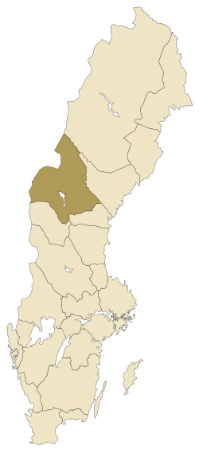
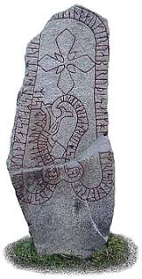
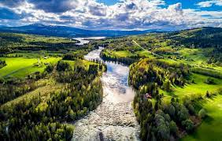

Jämtland
Jämtland (jämtska: Jamtlann [²jampl̪æn̪]) är ett landskap i södra Norrlands inland i mellersta Sverige.
Jämtland gränsar i väster till Tröndelag i Norge, i nordöst till Lappland, i öster till Ångermanland och i
söder till Härjedalen och Medelpad. Jämtland utgör 8,2 procent av Sveriges landyta, 34 009 kvadratkilometer
och är Sveriges till ytan näst största landskap. Jämtland har en befolkning på cirka 118 000 personer, och
landskapet är ett av de landskap i Sverige med flest personer bosatta på landsbygden. Emellertid bor
majoriteten av befolkningen i den tätbefolkade Storsjöbygden.

Histori
De första människorna kom till Jämtland någon gång mellan 7 000 och 6 000 år före Kristus från väster med en
kultur som sedan spreds vidare i Mellannorrland. De var jägare och samlare. Flera tusen fynd från deras tid
har hittats runt om i landskapet vid lägerplatser, längs stränder och sjöar, bland annat offerdalsspetsen
från Åflo. Jägarfolket var nomader och följde bytenas vandringar. I Jämtland dominerade redan på den här
tiden älgen, vilket flera hällmålningar och hällristningar vittnar om, bland annat vid Glösa i Alsen och vid
Gärdesån i Offerdal. Jämtland har sammanlagt omkring 20 000 kända fornlämningar.

Natur
Jämtland är fjäll, milsvida skogar, porlande fjällbäckar, älvar, sjöar och myrar. Men också böljande landskap
där människor odlat i nära 2000 år.
I västra Jämtland höjer sig fjällen. Det högsta fjällmassivet är Sylarna med sina dryga 1.700 meter över
havet. Sylarna ligger ganska långt söderut i länet, nära norska gränsen.
I södra Jämtland finns mycket barrskog. Tallhedar dominerar framför allt i de östra och södra delarna av
södra Jämtland, medan granen dominerar på höjdområdena upp mot fjällen i väster. Mellan granskogen och
kalfjället finns en bård av fjällbjörkskog. På grund av skogsbruk finns också stora arealer av odlad
barrskog i de sydöstra delarna.
I norra Jämtland finns i den östra delen näringsfattiga gran- och tallskogar. Jordbruk i denna del av
Jämtland finns bara i älvdalarna.
Ungefär mitt i Jämtland ligger Storsjön. Runt sjön finns ett mjukt böljande landskap. Här har människor
bedrivit jordbruk i den näringsrika jorden sedan nästan 2000 år.
